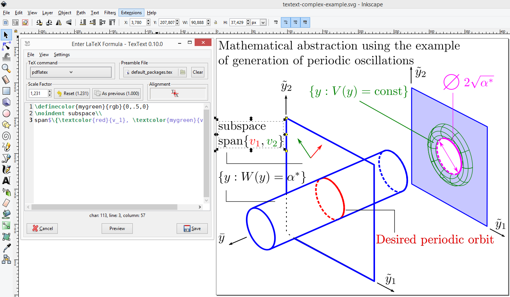

TexText - Re-editable LaTeX graphics for Inkscape¶
TexText is a Python extension for the vector graphics editor Inkscape providing the possibility to add and re-edit LaTeX generated SVG elements to your drawing.

Key features¶
- Compatible with upcoming release of Inkscape 1.0
- Windows/ Linux/ MacOS support
- LaTeX generated SVG elements can be re-edited later
- Multi-line editor with syntax highlighting (see §)
- Compilation with PdfLaTeX, XeLaTeX or LuaLaTex (see §)
- Interoperable scaling in TexText and Inkscape (see §)
- Customizable TeX preamble (additional packages, parskip, parindent, etc.) (see §)
- Colorization via TeX commands/ Inkscape is kept after re-editing (see §)
- Alignment anchor of the produced output (see §)
- Font size match with Inkscape text (see §)
- Preview images (see §)
- Compatibility with TexText down to version 0.4.x
Installation¶
Usage¶
- The TexText GUI
- TexText extension entry
- Dialog overview
- Available TeX compilers
- Preamble file
- Scaling of the output
- Alignment of the output
- Colorization of the output
- Preview button
- Configuration of the default TeX math-environment
- Selecting the shortcut for closing the TexText window
- Configuration of the code editor
- Further reading
- Frequently Asked Questions (FAQ)
- Explicit setting of font size
- Selection of special fonts
- Using special characters like German Umlaute (äüö) etc.
- Using TexText with older Inkscape versions
- Extension not shown in the Inkscape Extension menu
- Windows with MiKTeX: Compilation fails with empty error dialog
- Set Inkscape python interpreter to Python2
- Troubleshooting
Changelog
- Change log
- Version 1.0.0-dev.3 (2020-04-10)
- Version 1.0.0-dev.2 (2020-02-10)
- Version 1.0.0-dev.1 (2019-12-17)
- Version 0.11.0 (2019-06-22)
- Version 0.10.2 (2019-05-07)
- Version 0.10.1 (2019-04-17)
- Version 0.10.0 (2019-04-05)
- Version 0.9.1 (2018-12-27)
- Version 0.9.0 (2018-12-20)
- Version 0.8.2 (2018-12-12)
- Version 0.8.1 (2018-08-23)
- Version 0.8.0 (2018-08-21)
- Version 0.7.3 (2018-05-17)
- Version 0.7.2 (2018-04-06)
- Version 0.7.1 (2018-02-06)
- Version 0.7 (2017-12-15)
- Version 0.6.1 (2017-02-13)
- Version 0.6 (2017-02-01)
- Version 0.5.2 (2017-01-06)
- Version 0.5.1 (2016-10-10)